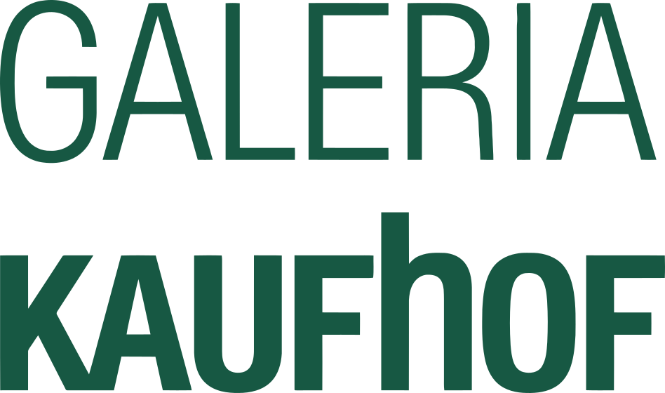

대표 로고대표 브랜드 마크
대표 로고대표 브랜드 마크갈레리아 카우프호프 Galeria Kaufhof
갈레리아 카우프호프(Galeria Kaufhof)는 독일에 마지막으로 남은 대형 백화점 체인이다.
최종 업데이트
갈레리아 카우프호프는 어떤 브랜드인가
갈레리아 카우프호프는 1879년 레온하르트 티츠가 독일 슈트랄준트에서 연 작은 직물점에서 출발한 독일 최대 백화점 체인으로, 현재 정식 명칭은 갈레리아다. 정찰제와 현금 거래, 환불 보장이라는 당시로선 파격적인 원칙으로 성장해 20세기 초 쾰른과 뒤셀도르프에 거점을 세웠다.
두 차례의 결정적 전환점은 2019년 경쟁사 카르슈타트와의 합병으로 단일 거대 체인이 된 사건, 그리고 2020년 이후 거듭된 법정관리(보호 회생)다. 한때 230여 개에 달하던 점포는 구조조정을 거쳐 약 83개로 줄었고, 종업원은 약 1만 2천 명 수준이다.
갈레리아 카우프호프는 어떻게 봐야 할까
갈레리아의 핵심 화두는 '독일에 마지막으로 남은 대형 백화점 체인'이라는 위상과, 그 위상이 무색하게 4년 새 세 번 법정관리를 신청한 구조적 위기의 공존이다. 백화점이라는 업태 자체가 전자상거래 확산, 도심 상권 공동화, 임대료·에너지 비용 급등에 가장 취약한 포맷임을 갈레리아는 압축적으로 보여준다.
생존 전략의 방향은 명확하다. 모든 카테고리를 얕게 펼치는 종합점 모델을 접고, 뷰티·핸드백·구두·이너웨어 같은 고마진 영역에 집중하며, 매장 면적을 브랜드가 직접 운영하는 컨세션·위탁 방식으로 전환해 재고 리스크를 외부화하는 것이다.
한국 독자에게 이 사례는 의미가 크다. 국내 백화점 역시 명품·식품·체험 중심으로 재편되고 지방 점포를 정리하는 흐름에 있어, 갈레리아의 점포 축소와 카테고리 재집중은 성숙 시장 백화점이 마주하는 공통의 시나리오로 읽힌다.
갈레리아 카우프호프는 어떻게 시작되고 성장했나
창립 배경은 19세기 후반 독일 동부의 보수적 상거래 관행이었다. 외상과 흥정이 일상이던 시기에, 30세의 레온하르트 티츠는 1879년 슈트랄준트에서 약 25제곱미터의 직물·단추 가게를 열며 정찰제와 현금 거래, 박리다매, 환불 보장을 도입했다.
이 원칙이 통하면서 사업은 빠르게 커졌고, 1905년 자본금 1천만 마르크의 레온하르트 티츠 주식회사로 법인화해 1914년 무렵 약 10개 점포를 거느린 체인으로 성장했다. 첫 번째 큰 전환점은 1933년이다.
나치의 아리아화 정책으로 유대인 창업 가문에게서 회사가 강제 박탈되며 베스트도이체 카우프호프로 개명됐고, 은행권이 지배 지분을 넘겨받았다. 두 번째 전환점은 소유 구조의 연쇄 이동이다.
1996년부터 2015년까지 메트로 그룹 산하에 있다가, 2015년 캐나다 허드슨스 베이가 인수했고, 2019년 오스트리아 지그나 홀딩이 카르슈타트와 합병시킨 뒤 같은 해 약 15억 달러에 전량 인수하며 단독 지배권을 쥐었다.
갈레리아 카우프호프의 브랜드 아이덴티티는 무엇인가
브랜드의 본질 가치는 도심 한복판에서 의식주를 한 지붕 아래 제공하는 '도시의 종합 생활 무대'다. 비주얼 아이덴티티는 합병 이후 단정한 워드마크형 'GALERIA' 로고와 절제된 색조로 통일됐고, 2024년 새 소유주 체제에서는 역사적 자산을 환기하기 위해 '갈레리아 카우프호프' 명칭을 되살리는 방향이 발표됐다.
핵심 타깃은 도심을 오가는 중산층 가족 단위 소비자와 직장인이며, 최근에는 뷰티·패션 잡화에 관심이 높은 고객층으로 무게중심을 옮기고 있다. 브랜드 보이스는 화려한 럭셔리보다 친근하고 신뢰감 있는 대중적 어조에 가깝고, 전통과 현대적 재단장 사이에서 균형을 잡으려 한다.
갈레리아 카우프호프의 대표 제품과 서비스는 무엇인가
취급 카테고리는 여성·남성·아동 의류와 신발, 스포츠 용품, 화장품·향수, 가방·시계·주얼리, 가구·홈리빙·주방, 완구, 문구, 식품·구르메까지 아우르는 종합형이다. 매장 포맷은 도심 대형 백화점 단일 포맷이 중심이며, 일부 점포는 레스토랑과 푸드홀을 함께 운영한다.
향후에는 브랜드가 직접 구역을 맡는 컨세션·위탁 비중을 늘리고 뷰티·잡화를 전면에 배치하는 방향이다. 판매 채널은 오프라인 점포와 온라인몰 galeria.de 두 축으로 구성된다.
갈레리아 카우프호프는 지금 어떤 상태인가
본사는 독일 에센에 있었으나 2025년 뒤셀도르프로 이전이 진행 중이며, 이로써 120여 년에 걸친 에센 시대가 마무리된다. 지배구조는 2024년 미국 투자자 리처드 베이커가 이끄는 컨소시엄(NRDC 계열)과 독일 기업가 베른트 베츠 측이 인수해 새 소유주 체제로 들어섰다.
국가는 독일이며, 현재 상태는 거듭된 법정관리를 거쳐 회생을 마무리한 단계다. 2020년 4월 첫 보호 회생에서 약 40개 점포를 닫고 약 6억 8천만 유로 규모의 국가 지원을 받았으며, 2022년 가을 에너지 가격 급등과 인플레이션을 배경으로 두 번째, 2024년 1월 모회사 지그나 홀딩의 도산 여파로 세 번째 법정관리를 신청했다.
2024년 7월 에센 법원이 회생 절차를 종결하며 약 83개 점포와 약 1만 2천 명의 고용을 유지한 채 재출발했다. 향후 실적 전망 등 세부 수치는 미공개.
갈레리아 카우프호프 로고는 어떻게 변해왔나
대표 로고대표 브랜드 마크
대표 로고 1보관 이미지 1자주 묻는 질문
갈레리아 카우프호프는 어느 나라 브랜드인가요?
갈레리아 카우프호프는 독일의 리테일·커머스 브랜드입니다.
갈레리아 카우프호프는 언제 설립되었나요?
갈레리아 카우프호프는 2019년 설립되었습니다.
갈레리아 카우프호프의 브랜드 아이덴티티는 무엇인가요?
브랜드의 본질 가치는 도심 한복판에서 의식주를 한 지붕 아래 제공하는 '도시의 종합 생활 무대'다.
갈레리아 카우프호프의 대표 제품은 무엇인가요?
취급 카테고리는 여성·남성·아동 의류와 신발, 스포츠 용품, 화장품·향수, 가방·시계·주얼리, 가구·홈리빙·주방, 완구, 문구, 식품·구르메까지 아우르는 종합형이다.
갈레리아 카우프호프의 본사는 어디에 있나요?
본사는 독일 에센에 있었으나 2025년 뒤셀도르프로 이전이 진행 중이며, 이로써 120여 년에 걸친 에센 시대가 마무리된다.
갈레리아 카우프호프의 공식 웹사이트는 어디인가요?
갈레리아 카우프호프의 공식 웹사이트는 https://www.galeria.de/ 입니다.
출처와 검증
갈레리아 카우프호프 관련 참고: 공식 웹사이트 · 위키데이터 Q80220059 · 영어 위키백과. 브랜드명은 한글과 원어를 함께 표기하되 데이터에 없는 표기는 만들지 않습니다. 기원 국가·설립연도는 검수된 정의문에서 확인된 값을 우선하고, 없을 때만 공식 웹사이트 URL이 일치하는 위키데이터 개체의 값을 씁니다. 위키데이터 값은 2026-09-07 기준입니다.